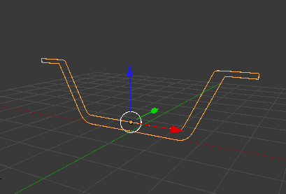
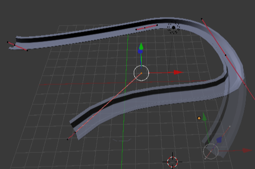
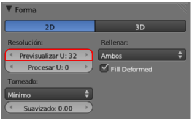

Extrusión en curvas
Tras la realización del canal de aguas debería asaltarnos una duda: ¿dónde está la novedad, o la ventaja de esto frente a lo que ya sabíamos de modelado de mallas y extrusión?. La respuesta es desoladora: hasta ahora ninguna. Pero no tiremos la toalla porque el verdadero potencial está en lo que viene a continuación: extrusiones sobre trayectorias curvas.
Supongamos estos dos asuntos respecto al objeto del perfil del canal:
- No tiene el modificador Espejo (es decir que la imagen de abajo representa una sola curva)
- Le damos un nombre significativo como puede ser perfil_canal.

Desde Modo Edición  , para que sea una curva independiente de la ya creada, añadimos una nueva Bézier (Añadir/Curva/Bézier) y nos inventamos una trayectoria.
, para que sea una curva independiente de la ya creada, añadimos una nueva Bézier (Añadir/Curva/Bézier) y nos inventamos una trayectoria.
Ahora seleccionamos el objeto de la trayectoria y en la botonera Geometría del panel  seleccionamos el objeto perfil_canal en el campo Objeto bisel.
seleccionamos el objeto perfil_canal en el campo Objeto bisel.
A partir de aquí las posibilidades de edición son increíbles porque al alterar cualquiera de los dos objetos el modelado se adaptará en tiempo real.
Igual que ocurría en el modificador Rosca debemos cuidar el tema de la resolución tal y como se indica en esta imagen.
